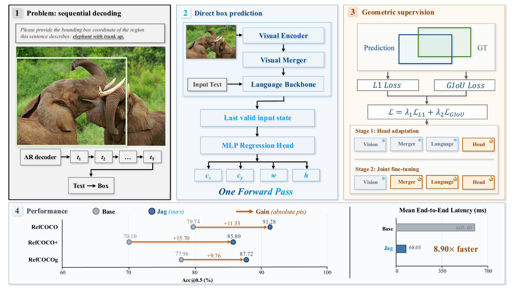
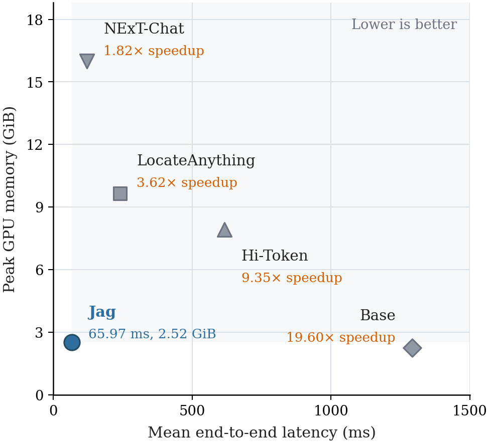
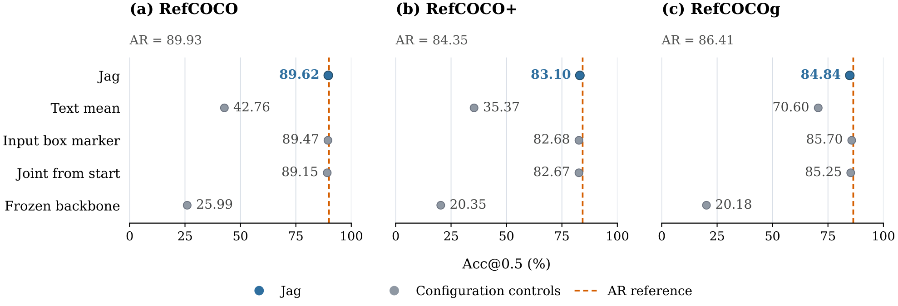
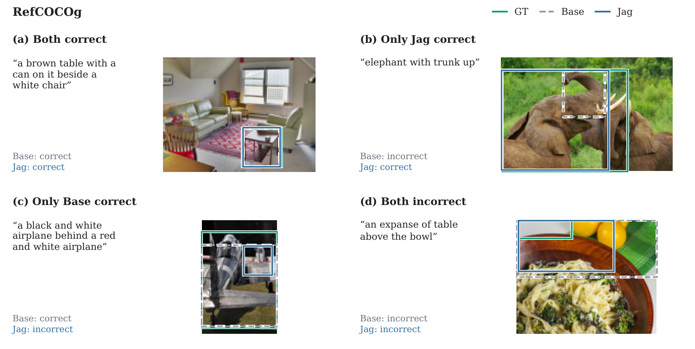

Read the input state
The readout follows the full image and referring expression, so the box prediction reuses their multimodal representation.
Adapt multimodal representations to geometry.
Predict the complete bounding box in one forward pass.
Latency and memory are measured in the single-request comparison.
Visual grounding requires an image, a referring expression, and a bounding box. Autoregressive multimodal models often express that box as a sequence of coordinate tokens, adding decoding steps to the image–language computation. Jag learns to predict the box directly from the model’s existing input representations. A lightweight regression head reads the last valid input-token state and returns all four continuous box values together. Geometric losses adapt both the multimodal representations and their mapping to coordinates. The resulting model improves over its base model across all five evaluated test splits, with competitive accuracy and lower single-request latency than the compared specialized grounding models.
Jag keeps the pretrained image–language computation and adapts it for continuous localization, without generating coordinate text.

The readout follows the full image and referring expression, so the box prediction reuses their multimodal representation.
L1 and GIoU losses train continuous box centers and dimensions, connecting the output directly to coordinate error and region overlap.
Head adaptation precedes joint fine-tuning of the language backbone, visual merger, and regression head. The remaining vision encoder stays frozen.
Jag improves over Base and NExT-Chat on every evaluated split and achieves the highest accuracy on three of the five splits in this comparison.
| Model | RefCOCO | RefCOCO+ | RefCOCOg | ||
|---|---|---|---|---|---|
| testA | testB | testA | testB | test | |
| Base Qwen3.5-0.8B | 84.27 | 74.72 | 76.53 | 62.57 | 77.96 |
| NExT-Chat | 89.66 | 77.04 | 83.76 | 66.19 | 79.28 |
| LocateAnything | 93.23 | 89.26 | 88.00 | 79.57 | 88.54 |
| Jag Ours | 93.90 | 88.36 | 90.69 | 80.08 | 87.72 |
A prediction is correct when its intersection over union with the target box is at least 0.5. Bold marks the best value in each column.
Consistent gains over Base. The improvement extends to every test split, including RefCOCO+, where expressions restrict location words and emphasize visual appearance.
Competitive with specialist models. Jag exceeds NExT-Chat on all five splits and LocateAnything on three, while LocateAnything leads on RefCOCO testB and RefCOCOg.
Direct regression returns all four coordinates after one multimodal forward pass. No subsequent coordinate generation is required.

| Model | Latency ms ↓ | Memory GiB ↓ | Jag speedup |
|---|---|---|---|
| Base | 1,293.01 | 2.25 | 19.60× |
| NExT-Chat | 120.01 | 15.99 | 1.82× |
| LocateAnything | 239.05 | 9.66 | 3.62× |
| Hi-Token | 616.90 | 7.91 | 9.35× |
| Jag | 65.97 | 2.52 | 1.00× |
Mean end-to-end prediction time and peak GPU process memory. Speedup compares each model’s latency with Jag. Model loading and warmup are excluded.
3.62× faster with 73.88% less GPU memory than LocateAnything in this comparison.
Jointly adapting the language backbone, visual merger, and regression head improves localization over fitting the head alone. Alternative readouts and training schedules remain competitive.

Examples from RefCOCOg compare Jag and Base against the annotated region, including shared successes and cases where either model fails.

Explore the model, run the demo, or reproduce training and evaluation with the Docker environment.
If you use Jag, you can cite the project:
@misc{zhu2026jag,
title = {Jag: Direct Box Prediction for Efficient Visual Grounding},
author = {Zhu, Xiuyuan and Lu, Ke and Wu, Hao and Du, Zijin
and Zhang, Dongming and Xue, Jian},
year = {2026},
url = {https://github.com/xyzzzh/Jag}
}For questions about the paper, code, or model, please contact us by email.